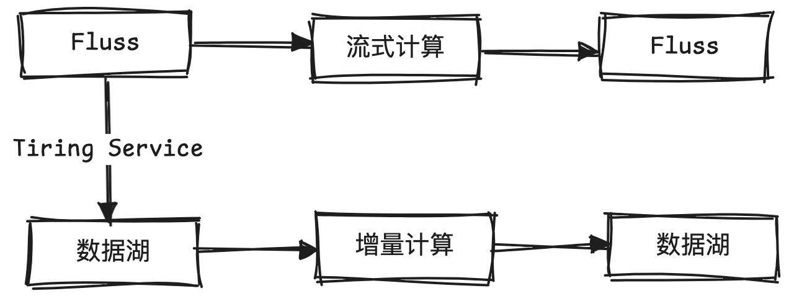

本文已收录在合集Apche Fluss原理与实践中.
Apache Fluss(Incubating)是一款新型的流式存储系统, 同时兼顾流式读写和实时分析. 它深度集成数据湖架构, 弥合了流数据与数据湖之间的鸿沟, 解决了数据湖的”最后一分钟”延迟问题. 本文总结了使用Fluss的7大理由, 包括其在数据能力及运维管理方面的先进性.
Lake Native
与数据湖的紧密结合, 是Fluss最重要的卖点之一. 湖仓一体(Lakehouse)架构正在成为主流, 但是相比于数据库服务, 目前湖仓一体架构的使用门槛仍偏高. 用户需要自行选取数据格式, 仔细优化数据读写, 管理底层数据文件. 不过湖仓一体的价值主张是明确的, 未来几年内要解决的是简化端到端架构. 尽管主流的计算引擎正在积极适配数据湖的读写, 尽最大可能实现开箱即用. 但是由于缺乏服务端的配合, 大量特性堆积在计算引擎侧, 还是不可避免地给用户增加了一些额外的复杂度. 此外, 数据湖的分钟级延迟, 导致通过级联作业构建的分层数仓的数据新鲜度逐层劣化.
Fluss是秒级实时的流存储, 天然有完整的服务端支持, 可提供类似数据库服务的易用读写, 级联作业也不会导致延迟增加. 因此有望成为简化湖仓一体架构的关键一环, 作为湖仓一体架构的对外服务界面, 简化数据入湖. 进而使得湖仓一体架构可以像数据仓库服务那样易用. Fluss与数据湖是互为补充的: 一方面Fluss可结合数据湖实现流批一体的存储, Fluss的Tiering Service可以将历史数据同步到数据湖, 这样大规模数据的分析可以直接在湖上进行. 加上Union Read的支持, 用户只需关心如何从Fluss读写和查询数据, 数据的管理和路由将由Fluss统一进行. 另一方面, 数据湖可借助Fluss的服务端能力, 简化数据入湖. 更进一步地, Fluss可提供无状态的REST API, 来实现最具弹性和易用的服务.
目前商业化的流存储服务如Confluent和Redpand都提供了REST API. Fluss社区对REST API已有初步的讨论, 相信在不久之后就会支持. 目前仍有待商榷的是大二进制对象的接入, 将大二进制对象接入流存储似乎不太必要, 以笔者不成熟的想法来看或许可以通过REST API直接接入Remote Storage或数据湖.
Flink Native
在当前的流处理研发中，Flink已成为计算框架的事实标准, 但存储层仍需复杂的选型与权衡. 本质上是因为一个完整的流处理链路通常需要多种类型的存储支持:
- 最基本的是需要流存储支持流式的读写, 来驱动或级联流处理链路;
- 对于处理中的数据富化需求, 需要不同类型的维表存储. 时效性要求不高的可以通过数据湖支持, 纯实时的需要支持实时点查的存储服务, 如Redis, HBase等.
- 对流处理结果的应用, 通常需要OLAP存储来支持查询和分析.
以前的问题是没有同时支持三种能力的存储, 而Fluss看来可以兼顾这几方面的能力. 对于Fluss而言流存储是原生的, 点查服务通过PrimaryKey表支持了, OLAP方面可基于数据湖存储提供大规模聚合分析能力, 以及Union Read提供秒级延迟的服务.
此外, Fluss作为Flink Native的流存储, 还能与Flink SQL进行更加紧密的配合. 有几个非常典型的案例:
- 一是优化双流Join. 由于传统流存储缺乏查询能力, 双流Join通常依赖于Flink的状态. 实践中颇受诟病的是Flink大状态带来的巨大资源开销和性能损耗, 外加Flink状态不可读的特性, 制约了问题排查和SQL逻辑修改. 有了Fluss之后, 可以依赖Flink最新引入的Delta Join去除双流Join所需的状态. 另外, 通过Fluss的Partial Update也可以通过大宽表模式, 将Join下推到存储侧, 直接去除计算侧的Join算子.
- 另一个是去除去重算子. 流计算中, 对于Append-Only的数据源, 如果业务上存在数据变更, 并且下游算子依赖CDC数据输入, 那么通常需要在Flink中增加一个去重算子来生成CDC数据, 这个算子需要保存所有的主键, 也存在状态过大问题. 基于Fluss Primary Key表的CDC生成能力, 可以直接去除Flink中的去重算子.
Kappa架构实现
在数据处理上, Lambda架构一直是广泛使用的架构, 但是从美学上来说Kappa架构似乎更加合理. 以往受限于实时层的成本, 数据回刷难度, 大规模分析难度以及持久化能力, Kappa架构很少有落地的场景. 如今, Fluss的Lake Native和Flink Native特性使得Kappa架构成为可能. 一方面, 数据湖存储极大地降低了实时层的存储成本, 简化了数据回刷; 另一方面, Fluss统一管理了实时层和数据湖的元数据, 使得读写一致性也得到了保证.
关于数据架构, 有趣的一点是Databricks提出的Delta架构. 它实际上提供了一种数据新鲜度与成本之间的平衡. 要实现Delta架构所说的增量计算, 一个重要的前提是存储层能捕获数据变更, 目前看数据湖存储是非常适合进行增量计算的存储层. 得益于Fluss的CDC生成能力, 以及与数据湖的紧密结合. Fluss表Tired产生的湖表也可以进行增量计算. 关于这方面的详细介绍, 可以参考笔者之前的文章Flink MT + Paimon - 开源低成本增量计算的曙光. 当然, Delta架构一般是不需要Fluss的秒级实时性的, 但是通过Fluss接入的数据, 或许能兼顾秒级实时计算与增量计算, 给业务更大的选择空间.

列裁剪及过滤下推
在现代数据仓库中, 列裁剪和过滤下推已成为成熟且广泛应用的优化技术. 它们通过在存储层尽早过滤无关数据, 有效减少了数据传输量, 降低了下游计算的处理压力. 然而, 这类优化能力在当前主流的流存储系统中仍是缺失的, 导致流式读取成本居高不下. 在一定程度上, 这也制约了流处理的的广泛应用.
Fluss创新性地将列存引入到了流存储中, 在底层存储上采用了基于Arrow的列存格式, 天然对列裁剪和数据过滤更加友好. 此外, Fluss支持的多级分区可以率先在粗粒度上对业务数据进行分流, 实现数据资产分离的同时降低下游的读压力. 以往对于公共层的大规模实时数据源, 为了降低下游读成本, 通常还需要自建分流链路, 在Fluss中只需合理定义表结构即可.
关于列存, 一个很自然的疑问是: 列存需要攒批才能发挥效果, 它真的适合流存储吗? 实际上, Kafka等面向大数据的流存储, 在读写时为了提升吞吐量都是攒批的, 这些批可以很自然地转换为列存格式. Arroyo的这篇文章更详细的解释了为什么列存同样适用于流存储.
数据更新与探查
传统的流存储往往是Append-Only的, 对于存在Upsert的场景, 就需要在Flink中添加额外的排序去重算子, 而去重算子是一个需要保存大量的状态高成本操作. Fluss PrimaryKey表的数据更新能力可以去除下游的去重算子, 将更新操作下推到存储层.
在数据探查方面, 对于PrimaryKey表, 本身就能支持点查, 除了方便排查问题时进行探查, 也能作为Flink的实时维表. 对于Log表, 由于底层采用了基于Arrow的列存格式, 也能更方便地做Data Skip来支持大规模的查询. 此外, 在Fluss的架构下, 未来支持更多的索引结构, 如倒排索引也是可能的.
多模态数据支持
AI时代带来了更多的非结构化数据存储需求, 如文本, 图像, 视频, 特征向量及模型等. 数据湖已经开始探索这类数据的存储, 例如Paimon的Object Table, LanceDB重新实现了一种更适合非结构化数据的湖格式Lance. 目前这些存储都面向批读批写, 流式的读写仍需探索.
Fluss已经初步实现了和Lance的结合, 支持通过Tiering Service将Fluss中的数据同步到Lance中, 当然目前还处于早期阶段, 尚不支持大二进制对象. 不过可以明确的是, Fluss在非结构化数据的流式入湖方面有天然的优势, 无论是采用已有的读写路径, 还是采用上文所说的REST API, 都更易于形成非结构化数据流式读写的标准.
Auto Rebalance
Fluss当前采用了类似Kafka的三副本复制协议来保证数据的高可用. 在Kafka中, 这一协议给大规模集群的运维管理带来了巨大挑战. 为了更好地迁移副本, 平衡集群负载, 业界在Kafka内核之外做了大量工作, 其中有代表性的是LinkedIn的Cruise Control, 它是一个Kafka集群的管理控制台, 可以根据磁盘, 网络, CPU等监控指标对Kafka集群进行副本的重平衡.
Fluss站在巨人的肩膀上, 直接把Rebalance的能力内置到了内核(参考FIP-8, FIP-13), 提供了开箱即用的运维管理能力.
总结
Fluss关注到了流存储长期以来存在的能力缺失问题, 在此基础上, 重新定义了面向流计算与数据湖深度融合的流存储架构. 在计算层面, Fluss与Flink深度集成, 将传统依赖其他存储引擎实现的能力进行抽象与标准化, 提供更加易用, 高效的流计算能力; 在存储层面, Fluss与数据湖无缝对接, 构建了流存储与批存储的统一视图, 实现了存储系统的统一管理与访问.
Fluss目前有所欠缺的是云原生能力. 元数据的存储和管理依赖Zookeeper, 在扩展性方面存在一定瓶颈. 在日志数据的存储上, 目前还是类似Kafka的三副本模式, 没有彻底采用存算分离架构. 不过这些目前都不会制约Fluss的发展, 不影响Fluss在数据能力上的先进性. 在Fluss的Roadmap中, 也明确有计划移除Zookeeper并采用存算分离架构, 相信这一天不会太远.
最后, 欢迎使用Fluss并随时交流使用中的任何问题, 也欢迎在Github上点个Star支持一下.
参考
[1] Why Fluss? Top 4 Challenges of Using Kafka for Real-Time Analytics 中文
[2] 流存储Fluss: 迈向湖流一体架构
[3] Fluss湖流一体: Lakehouse架构实时化演进
[4] Fluss: First Impression
[5] 对话王峰: Apache Flink在AI时代的”剑锋”所向
[6] 从嵌入式状态管理到云原生架构: Apache Flink的演进与下一代增量计算范式
[7] 基于Flink进行增量批计算的探索与实践
[8] Understanding Apache Fluss
[9] Setup Real-Time Multimodal AI Analytics with Apache Fluss (incubating) and Lance
本博客所有文章除特别声明外, 均采用CC BY-NC-SA 3.0 CN许可协议. 转载请注明出处!
关注笔者微信公众号获得最新文章推送